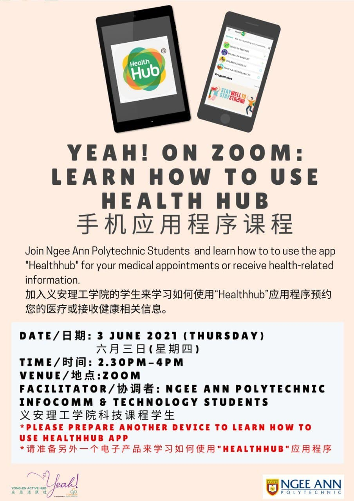

Service Learning Project 2021
Description of the project
The project was to teach a group of seniors from Yong En Care Centre to use HealthHub, a one-stop portal for
Singaporeans to access a wide range of health content, rewards and e-services. For this
workshop, the plan was to showcase and demonstrate 4 main sections of the application, which is “Health
Articles”, “E-Health Booklet”, “Appointment Booking” and “Health Programmes”. By teaching these sections, we
hope that the seniors will be able to understand more about the different features in HealthHub and how to
use them.
The workshop with Yong En seniors occurred on 3rd June 2021. However due to Covid-19, we were not able to
teach
the seniors at the Yong En Care Centre. Instead, we had to conduct the workshop via Zoom. To ensure that
the presentation was organised smoothly, the class was split into groups of 4-5, where each group will be
in-charge of a group of seniors.
As my team knew our target audience were a group of seniors, my group and I knew we had to present the
workshop in a manner
that they would understand. This means that out presentation should be easy to follow, non-technical and
concise. My team also translated the slides so that both english and chinese speaking seniors will be able
to understand the presentation.
Through several rehearsals within my team and a dry run with the representives from Yong En, my team members
where confident that we would be ready for the actual workshop with the seniors. As a result, t.he workshop
during the actual day was conducted smoothly as there were no major problems that arose
Acadamic growth
The project has taught me the importance of good User Interface / User Experience (UI/UX) in mobile
applications. When navigating around the HealthHub application during the project, I noticed several poor
UI/UX choices that may be confusing to seniors, like poorly named tabs and confusing navigation. From this,
I have realised that UI/UX is especially important in applications that are targeting seniors
who may have trouble remembering which buttons to press or would not understand what certain icons
represent. As a result, more attention has to be put into UI/UX to ensure that the user will be navigate
around the application smoothly.
In addition, I have learnt the importance of understanding your target audience. For this project, the
class correctly identified our target audience, which are seniors. As a result, we were able to create our
workshop with senior in mind. So, our slides were concise, non-technical and
incorporated a lot of screenshots to allow the seniors to understand what is being taught. By correctly
identifying our target audience, the presentation went smoothly and the seniors had an enjoyable time
learning.
Civic Learning
By talking to the elderlies, my team and I understood some of the problems the seniors faced, like being
unable to keep up with
technology, not understanding how to use certain government apps, etc. In addition, they also stated their
interest in learning about technology as they were also attending other workshops like photo montage making
and cloud storage for photos. This was eye-opening as always thought that elderlies do not like to learn new
things due to their old age.
This project has made me notice the importance of multi-language support in web and mobile content. This is
because there are still many people in the world whose first language is not English. For example, during
the S-L project, the presentation slides included both English and mandarin descriptions. which allowed
seniors who only understood mandarin to keep up with the lesson, and learn comfortably. So, by providing
different language options, online content can be more widely available to people.